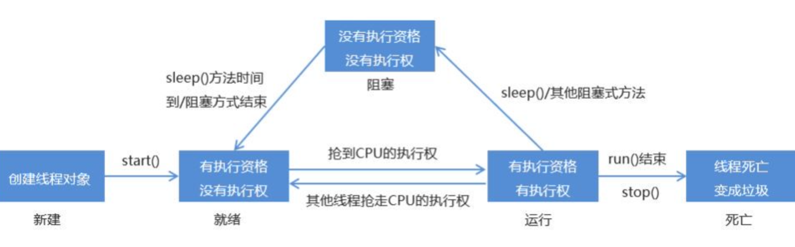

# 实现多线程
# 进程和线程
进程：是正在运行的程序
是系统进行资源分配和调用的独立单位
每一个进程都有它自己的内存空间和系统资源
线程：是进程中的单个顺序控制流，是一条执行路径
单线程：一个进程如果只有一条执行路径，则称为单线程程序
多线程：一个进程如果有多条执行路径，则称为多线程程序
# 实现多线程方式一：继承 Thread 类
方法介绍
方法名 说明 void run() 在线程开启后，此方法将被调用执行 void start() 使此线程开始执行，Java 虚拟机会调用 run 方法 () 实现步骤
- 定义一个类 MyThread 继承 Thread 类
- 在 MyThread 类中重写 run () 方法
- 创建 MyThread 类的对象
- 启动线程
代码演示
public class MyThread extends Thread {
@Overridepublic void run() {
for(int i=0; i<100; i++) {
System.out.println(i);
}}}public class MyThreadDemo {
public static void main(String[] args) {
MyThread my1 = new MyThread();
MyThread my2 = new MyThread();
// my1.run();// my2.run();//void start () 导致此线程开始执行；Java 虚拟机调用此线程的 run 方法my1.start();
my2.start();
}}两个小问题
为什么要重写 run () 方法？
因为 run () 是用来封装被线程执行的代码
run () 方法和 start () 方法的区别？
run ()：封装线程执行的代码，直接调用，相当于普通方法的调用
start ()：启动线程；然后由 JVM 调用此线程的 run () 方法
# 设置和获取线程名称
方法介绍
方法名 说明 void setName(String name) 将此线程的名称更改为等于参数 name String getName() 返回此线程的名称 Thread currentThread() 返回对当前正在执行的线程对象的引用 代码演示
public class MyThread extends Thread {
public MyThread() {}
public MyThread(String name) {
super(name);
}@Overridepublic void run() {
for (int i = 0; i < 100; i++) {
System.out.println(getName()+":"+i);
}}}public class MyThreadDemo {
public static void main(String[] args) {
MyThread my1 = new MyThread();
MyThread my2 = new MyThread();
//void setName (String name)：将此线程的名称更改为等于参数 namemy1.setName("高铁");
my2.setName("飞机");
//Thread(String name)MyThread my1 = new MyThread("高铁");
MyThread my2 = new MyThread("飞机");
my1.start();
my2.start();
//static Thread currentThread () 返回对当前正在执行的线程对象的引用System.out.println(Thread.currentThread().getName());
}}
# 线程优先级
线程调度
两种调度方式
- 分时调度模型：所有线程轮流使用 CPU 的使用权，平均分配每个线程占用 CPU 的时间片
- 抢占式调度模型：优先让优先级高的线程使用 CPU，如果线程的优先级相同，那么会随机选择一个，优先级高的线程获取的 CPU 时间片相对多一些
Java 使用的是抢占式调度模型
随机性
假如计算机只有一个 CPU，那么 CPU 在某一个时刻只能执行一条指令，线程只有得到 CPU 时间片，也就是使用权，才可以执行指令。所以说多线程程序的执行是有随机性，因为谁抢到 CPU 的使用权是不一定的
优先级相关方法
方法名 说明 final int getPriority() 返回此线程的优先级 final void setPriority(int newPriority) 更改此线程的优先级 线程默认优先级是 5；线程优先级的范围是：1-10 代码演示
public class ThreadPriority extends Thread {
@Overridepublic void run() {
for (int i = 0; i < 100; i++) {
System.out.println(getName() + ":" + i);
}}}public class ThreadPriorityDemo {
public static void main(String[] args) {
ThreadPriority tp1 = new ThreadPriority();
ThreadPriority tp2 = new ThreadPriority();
ThreadPriority tp3 = new ThreadPriority();
tp1.setName("高铁");
tp2.setName("飞机");
tp3.setName("汽车");
//public final int getPriority ()：返回此线程的优先级System.out.println(tp1.getPriority()); //5
System.out.println(tp2.getPriority()); //5
System.out.println(tp3.getPriority()); //5
//public final void setPriority (int newPriority)：更改此线程的优先级// tp1.setPriority(10000); //IllegalArgumentExceptionSystem.out.println(Thread.MAX_PRIORITY); //10
System.out.println(Thread.MIN_PRIORITY); //1
System.out.println(Thread.NORM_PRIORITY); //5
// 设置正确的优先级tp1.setPriority(5);
tp2.setPriority(10);
tp3.setPriority(1);
tp1.start();
tp2.start();
tp3.start();
}}
# 线程控制
相关方法
方法名 说明 static void sleep(long millis) 使当前正在执行的线程停留（暂停执行）指定的毫秒数 void join() 等待这个线程死亡 void setDaemon(boolean on) 将此线程标记为守护线程，当运行的线程都是守护线程时，Java 虚拟机将退出 代码演示
sleep演示：
public class ThreadSleep extends Thread {
@Overridepublic void run() {
for (int i = 0; i < 100; i++) {
System.out.println(getName() + ":" + i);
try {
Thread.sleep(1000);
} catch (InterruptedException e) {
e.printStackTrace();
}}}}public class ThreadSleepDemo {
public static void main(String[] args) {
ThreadSleep ts1 = new ThreadSleep();
ThreadSleep ts2 = new ThreadSleep();
ThreadSleep ts3 = new ThreadSleep();
ts1.setName("曹操");
ts2.setName("刘备");
ts3.setName("孙权");
ts1.start();
ts2.start();
ts3.start();
}}Join演示：public class ThreadJoin extends Thread {
@Overridepublic void run() {
for (int i = 0; i < 100; i++) {
System.out.println(getName() + ":" + i);
}}}public class ThreadJoinDemo {
public static void main(String[] args) {
ThreadJoin tj1 = new ThreadJoin();
ThreadJoin tj2 = new ThreadJoin();
ThreadJoin tj3 = new ThreadJoin();
tj1.setName("康熙");
tj2.setName("四阿哥");
tj3.setName("八阿哥");
tj1.start();
try {
tj1.join();
} catch (InterruptedException e) {
e.printStackTrace();
}tj2.start();
tj3.start();
}}Daemon演示：public class ThreadDaemon extends Thread {
@Overridepublic void run() {
for (int i = 0; i < 100; i++) {
System.out.println(getName() + ":" + i);
}}}public class ThreadDaemonDemo {
public static void main(String[] args) {
ThreadDaemon td1 = new ThreadDaemon();
ThreadDaemon td2 = new ThreadDaemon();
td1.setName("关羽");
td2.setName("张飞");
// 设置主线程为刘备Thread.currentThread().setName("刘备");
// 设置守护线程td1.setDaemon(true);
td2.setDaemon(true);
td1.start();
td2.start();
for(int i=0; i<10; i++) {
System.out.println(Thread.currentThread().getName()+":"+i);
}}}
# 线程的生命周期
线程一共有五种状态，线程在各种状态之间转换。

# 实现多线程方式二：实现 Runnable 接口
Thread 构造方法
方法名 说明 Thread(Runnable target) 分配一个新的 Thread 对象 Thread(Runnable target, String name) 分配一个新的 Thread 对象 实现步骤
- 定义一个类 MyRunnable 实现 Runnable 接口
- 在 MyRunnable 类中重写 run () 方法
- 创建 MyRunnable 类的对象
- 创建 Thread 类的对象，把 MyRunnable 对象作为构造方法的参数
- 启动线程
代码演示
public class MyRunnable implements Runnable {
@Overridepublic void run() {
for(int i=0; i<100; i++) {
System.out.println(Thread.currentThread().getName()+":"+i);
}}}public class MyRunnableDemo {
public static void main(String[] args) {
// 创建 MyRunnable 类的对象MyRunnable my = new MyRunnable();
// 创建 Thread 类的对象，把 MyRunnable 对象作为构造方法的参数//Thread(Runnable target)// Thread t1 = new Thread(my);// Thread t2 = new Thread(my);//Thread(Runnable target, String name)Thread t1 = new Thread(my,"高铁");
Thread t2 = new Thread(my,"飞机");
// 启动线程t1.start();
t2.start();
}}多线程的实现方案有两种
- 继承 Thread 类
- 实现 Runnable 接口
相比继承 Thread 类，实现 Runnable 接口的好处
避免了 Java 单继承的局限性
适合多个相同程序的代码去处理同一个资源的情况，把线程和程序的代码、数据有效分离，较好的体现了面向对象的设计思想
# 线程同步
# 卖票
案例需求
某电影院目前正在上映国产大片，共有 100 张票，而它有 3 个窗口卖票，请设计一个程序模拟该电影院卖票
实现步骤
定义一个类 SellTicket 实现 Runnable 接口，里面定义一个成员变量：private int tickets = 100;
在 SellTicket 类中重写 run () 方法实现卖票，代码步骤如下
判断票数大于 0，就卖票，并告知是哪个窗口卖的
卖了票之后，总票数要减 1
票没有了，也可能有人来问，所以这里用死循环让卖票的动作一直执行
定义一个测试类 SellTicketDemo，里面有 main 方法，代码步骤如下
创建 SellTicket 类的对象
创建三个 Thread 类的对象，把 SellTicket 对象作为构造方法的参数，并给出对应的窗口名称
启动线程
代码实现
public class SellTicket implements Runnable {
private int tickets = 100;
// 在 SellTicket 类中重写 run () 方法实现卖票，代码步骤如下@Overridepublic void run() {
while (true) {
if (tickets > 0) {
System.out.println(Thread.currentThread().getName() + "正在出售第" + tickets + "张票");
tickets--;
}}}}public class SellTicketDemo {
public static void main(String[] args) {
// 创建 SellTicket 类的对象SellTicket st = new SellTicket();
// 创建三个 Thread 类的对象，把 SellTicket 对象作为构造方法的参数，并给出对应的窗口名称Thread t1 = new Thread(st,"窗口1");
Thread t2 = new Thread(st,"窗口2");
Thread t3 = new Thread(st,"窗口3");
// 启动线程t1.start();
t2.start();
t3.start();
}}执行结果


# 卖票案例的问题
卖票出现了问题
相同的票出现了多次
出现了负数的票
问题产生原因
线程执行的随机性导致的
public class SellTicket implements Runnable {
private int tickets = 100;
@Overridepublic void run() {
// 相同的票出现了多次// while (true) {// //tickets = 100;// //t1,t2,t3// // 假设 t1 线程抢到 CPU 的执行权// if (tickets > 0) {// // 通过 sleep () 方法来模拟出票时间// try {// Thread.sleep(100);// //t1 线程休息 100 毫秒// //t2 线程抢到了 CPU 的执行权，t2 线程就开始执行，执行到这里的时候，t2 线程休息 100 毫秒// //t3 线程抢到了 CPU 的执行权，t3 线程就开始执行，执行到这里的时候，t3 线程休息 100 毫秒// } catch (InterruptedException e) {// e.printStackTrace();// }// // 假设线程按照顺序醒过来// //t1 抢到 CPU 的执行权，在控制台输出：窗口 1 正在出售第 100 张票// System.out.println (Thread.currentThread ().getName () + "正在出售第" + tickets + "张票");// //t2 抢到 CPU 的执行权，在控制台输出：窗口 2 正在出售第 100 张票// //t3 抢到 CPU 的执行权，在控制台输出：窗口 3 正在出售第 100 张票// tickets--;// // 如果这三个线程还是按照顺序来，这里就执行了 3 次 -- 的操作，最终票就变成了 97// }// }// 出现了负数的票while (true) {
//tickets = 1;//t1,t2,t3// 假设 t1 线程抢到 CPU 的执行权if (tickets > 0) {
// 通过 sleep () 方法来模拟出票时间try {
Thread.sleep(100);
//t1 线程休息 100 毫秒//t2 线程抢到了 CPU 的执行权，t2 线程就开始执行，执行到这里的时候，t2 线程休息 100 毫秒//t3 线程抢到了 CPU 的执行权，t3 线程就开始执行，执行到这里的时候，t3 线程休息 100 毫秒} catch (InterruptedException e) {
e.printStackTrace();
}// 假设线程按照顺序醒过来//t1 抢到了 CPU 的执行权，在控制台输出：窗口 1 正在出售第 1 张票// 假设 t1 继续拥有 CPU 的执行权，就会执行 tickets--; 操作，tickets = 0;//t2 抢到了 CPU 的执行权，在控制台输出：窗口 1 正在出售第 0 张票// 假设 t2 继续拥有 CPU 的执行权，就会执行 tickets--; 操作，tickets = -1;//t3 抢到了 CPU 的执行权，在控制台输出：窗口 3 正在出售第 - 1 张票// 假设 t2 继续拥有 CPU 的执行权，就会执行 tickets--; 操作，tickets = -2;System.out.println(Thread.currentThread().getName() + "正在出售第" + tickets + "张票");
tickets--;
}}}}
# 同步代码块解决数据安全问题
安全问题出现的条件
是多线程环境
有共享数据
有多条语句操作共享数据
如何解决多线程安全问题呢？
- 基本思想：让程序没有安全问题的环境
怎么实现呢？
把多条语句操作共享数据的代码给锁起来，让任意时刻只能有一个线程执行即可
Java 提供了同步代码块的方式来解决
同步代码块格式：
synchronized(任意对象) {
多条语句操作共享数据的代码
}synchronized (任意对象)：就相当于给代码加锁了，任意对象就可以看成是一把锁
同步的好处和弊端
好处：解决了多线程的数据安全问题
弊端：当线程很多时，因为每个线程都会去判断同步上的锁，这是很耗费资源的，无形中会降低程序的运行效率
代码演示
public class SellTicket implements Runnable {
private int tickets = 100;
private Object obj = new Object();
@Overridepublic void run() {
while (true) {
//tickets = 100;//t1,t2,t3// 假设 t1 抢到了 CPU 的执行权// 假设 t2 抢到了 CPU 的执行权synchronized (obj) {
//t1 进来后，就会把这段代码给锁起来if (tickets > 0) {
try {
Thread.sleep(100);
//t1 休息 100 毫秒} catch (InterruptedException e) {
e.printStackTrace();
}// 窗口 1 正在出售第 100 张票System.out.println(Thread.currentThread().getName() + "正在出售第" + tickets + "张票");
tickets--; //tickets = 99;
}}//t1 出来了，这段代码的锁就被释放了}}}public class SellTicketDemo {
public static void main(String[] args) {
SellTicket st = new SellTicket();
Thread t1 = new Thread(st, "窗口1");
Thread t2 = new Thread(st, "窗口2");
Thread t3 = new Thread(st, "窗口3");
t1.start();
t2.start();
t3.start();
}}
# 同步方法解决数据安全问题
同步方法的格式
同步方法：就是把 synchronized 关键字加到方法上
修饰符 synchronized 返回值类型 方法名(方法参数) {
方法体；
}同步方法的锁对象是什么呢？
this
静态同步方法
同步静态方法：就是把 synchronized 关键字加到静态方法上
修饰符 static synchronized 返回值类型 方法名(方法参数) {
方法体；
}同步静态方法的锁对象是什么呢？
类名.class
代码演示
public class SellTicket implements Runnable {
private static int tickets = 100;
private int x = 0;
@Overridepublic void run() {
while (true) {
sellTicket()；
}}// 同步方法// private synchronized void sellTicket() {// if (tickets > 0) {// try {// Thread.sleep(100);// } catch (InterruptedException e) {// e.printStackTrace();// }// System.out.println (Thread.currentThread ().getName () + "正在出售第" + tickets + "张票");// tickets--;// }// }// 静态同步方法private static synchronized void sellTicket() {
if (tickets > 0) {
try {
Thread.sleep(100);
} catch (InterruptedException e) {
e.printStackTrace();
}System.out.println(Thread.currentThread().getName() + "正在出售第" + tickets + "张票");
tickets--;
}}}public class SellTicketDemo {
public static void main(String[] args) {
SellTicket st = new SellTicket();
Thread t1 = new Thread(st, "窗口1");
Thread t2 = new Thread(st, "窗口2");
Thread t3 = new Thread(st, "窗口3");
t1.start();
t2.start();
t3.start();
}}
# 线程安全的类
StringBuffer
线程安全，可变的字符序列
从版本 JDK 5 开始，被 StringBuilder 替代。 通常应该使用 StringBuilder 类，因为它支持所有相同的操作，但它更快，因为它不执行同步
Vector
- 从 Java 2 平台 v1.2 开始，该类改进了 List 接口，使其成为 Java Collections Framework 的成员。 与新的集合实现不同， Vector 被同步。 如果不需要线程安全的实现，建议使用 ArrayList 代替 Vector
Hashtable
- 该类实现了一个哈希表，它将键映射到值。 任何非 null 对象都可以用作键或者值
- 从 Java 2 平台 v1.2 开始，该类进行了改进，实现了 Map 接口，使其成为 Java Collections Framework 的成员。 与新的集合实现不同， Hashtable 被同步。 如果不需要线程安全的实现，建议使用 HashMap 代替 Hashtable
# Lock 锁
虽然我们可以理解同步代码块和同步方法的锁对象问题，但是我们并没有直接看到在哪里加上了锁，在哪里释放了锁，为了更清晰的表达如何加锁和释放锁，JDK5 以后提供了一个新的锁对象 Lock
Lock 是接口不能直接实例化，这里采用它的实现类 ReentrantLock 来实例化
ReentrantLock 构造方法
方法名 说明 ReentrantLock() 创建一个 ReentrantLock 的实例 加锁解锁方法
方法名 说明 void lock() 获得锁 void unlock() 释放锁 代码演示
public class SellTicket implements Runnable {
private int tickets = 100;
private Lock lock = new ReentrantLock();
@Overridepublic void run() {
while (true) {
try {
lock.lock();
if (tickets > 0) {
try {
Thread.sleep(100);
} catch (InterruptedException e) {
e.printStackTrace();
}System.out.println(Thread.currentThread().getName() + "正在出售第" + tickets + "张票");
tickets--;
}} finally {
lock.unlock();
}}}}public class SellTicketDemo {
public static void main(String[] args) {
SellTicket st = new SellTicket();
Thread t1 = new Thread(st, "窗口1");
Thread t2 = new Thread(st, "窗口2");
Thread t3 = new Thread(st, "窗口3");
t1.start();
t2.start();
t3.start();
}}
# 生产者消费者
# 生产者和消费者模式概述
概述
生产者消费者模式是一个十分经典的多线程协作的模式，弄懂生产者消费者问题能够让我们对多线程编程的理解更加深刻。
所谓生产者消费者问题，实际上主要是包含了两类线程：
一类是生产者线程用于生产数据
一类是消费者线程用于消费数据
为了解耦生产者和消费者的关系，通常会采用共享的数据区域，就像是一个仓库
生产者生产数据之后直接放置在共享数据区中，并不需要关心消费者的行为
消费者只需要从共享数据区中去获取数据，并不需要关心生产者的行为
Object 类的等待和唤醒方法
方法名 说明 void wait() 导致当前线程等待，直到另一个线程调用该对象的 notify () 方法或 notifyAll () 方法 void notify() 唤醒正在等待对象监视器的单个线程 void notifyAll() 唤醒正在等待对象监视器的所有线程
# 生产者和消费者案例
案例需求
生产者消费者案例中包含的类：
奶箱类 (Box)：定义一个成员变量，表示第 x 瓶奶，提供存储牛奶和获取牛奶的操作
生产者类 (Producer)：实现 Runnable 接口，重写 run () 方法，调用存储牛奶的操作
消费者类 (Customer)：实现 Runnable 接口，重写 run () 方法，调用获取牛奶的操作
测试类 (BoxDemo)：里面有 main 方法，main 方法中的代码步骤如下
①创建奶箱对象，这是共享数据区域
②创建消费者创建生产者对象，把奶箱对象作为构造方法参数传递，因为在这个类中要调用存储牛奶的操作
③对象，把奶箱对象作为构造方法参数传递，因为在这个类中要调用获取牛奶的操作
④创建 2 个线程对象，分别把生产者对象和消费者对象作为构造方法参数传递
⑤启动线程
代码实现
public class Box {
// 定义一个成员变量，表示第 x 瓶奶private int milk;
// 定义一个成员变量，表示奶箱的状态private boolean state = false;
// 提供存储牛奶和获取牛奶的操作public synchronized void put(int milk) {
// 如果有牛奶，等待消费if(state) {
try {
wait();
} catch (InterruptedException e) {
e.printStackTrace();
}}// 如果没有牛奶，就生产牛奶this.milk = milk;
System.out.println("送奶工将第" + this.milk + "瓶奶放入奶箱");
// 生产完毕之后，修改奶箱状态state = true;
// 唤醒其他等待的线程notifyAll();
}public synchronized void get() {
// 如果没有牛奶，等待生产if(!state) {
try {
wait();
} catch (InterruptedException e) {
e.printStackTrace();
}}// 如果有牛奶，就消费牛奶System.out.println("用户拿到第" + this.milk + "瓶奶");
// 消费完毕之后，修改奶箱状态state = false;
// 唤醒其他等待的线程notifyAll();
}}public class Producer implements Runnable {
private Box b;
public Producer(Box b) {
this.b = b;
}@Overridepublic void run() {
for(int i=1; i<=30; i++) {
b.put(i);
}}}public class Customer implements Runnable {
private Box b;
public Customer(Box b) {
this.b = b;
}@Overridepublic void run() {
while (true) {
b.get();
}}}public class BoxDemo {
public static void main(String[] args) {
// 创建奶箱对象，这是共享数据区域Box b = new Box();
// 创建生产者对象，把奶箱对象作为构造方法参数传递，因为在这个类中要调用存储牛奶的操作Producer p = new Producer(b);
// 创建消费者对象，把奶箱对象作为构造方法参数传递，因为在这个类中要调用获取牛奶的操作Customer c = new Customer(b);
// 创建 2 个线程对象，分别把生产者对象和消费者对象作为构造方法参数传递Thread t1 = new Thread(p);
Thread t2 = new Thread(c);
// 启动线程t1.start();
t2.start();
}}